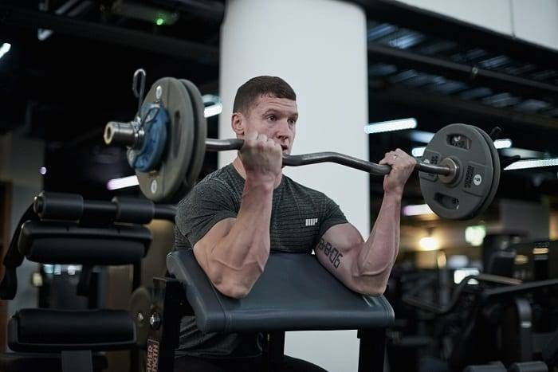
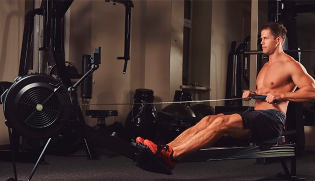
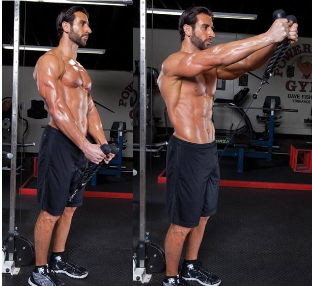

Buscar Rutinas

Rutinas Tronco Súperior
Ver rutinaabout this is some title
Rutinas Tronco Inferior
Ver rutinaabout this is some titleRutina semanal
| Martes/Espalda y hombro | Miercoles/Pierna | Jueves/Pecho biceps y tricep | Viernes/Pierna y Gluteos | Sabado/Espalda y hombro |
|---|---|---|---|---|
| 3 series de remo sentada con triangulo 15 repeticiones 3 series de remo con mancuernas 15 repeticiones 3 series de jalon al pecho con hagarre abierto y cerrado 15 repeticiones de cada uno 3 series del banco romando 15 repeticiones 3 series de press militar alternado con laterales 15 repeticiones 3 series de elevacion frontal de disco 15 repeticiones 3 series de jalon al rostro con cuerda 15 repeticiones | 3 series de sentadilla de 10 repeticiones 4 Series en prensa de 15 repeticiones 3 series de setadilla estatica 3 series de desplantes 15 de cada pie 3 series de elavacion de talon 15 repeticiones 3 series de extencion de cuadricep 15 repeticiones 3 series de costureta 15 repeticiones | 3 series de press normal con mancuernas 15 repeticiones 3 series en el peck 15 repeticiones 3 series de lagartijas 15 repeticiones 3 series de extencion copa a una mano 15 repeticiones 3 series de rompe cráneos 15 repeticiones 3 series de extencion tras nuca 15 repeticiones 3 series de predicador con mancuernas 15 repeticiones 3 series de martillos 15 repeticiones 3 series de 21s con barra 15 repeticiones x | 3 series de elevacion de pelbis 15 repeticiones 3 series de sentadillas sumo 15 repeticiones 3 series de sentadilla bulgara 15 repeticiones 3 series de abductores 15 repeticiones 3 series de patada en polea 15 repeticiones 3 series de curl de femoral acostada al fallo 3 series de cuadripceps al fallo | 3 series de remo con mancuernas 15 repeticiones 3 series de jalon al pecho con triangulo 15 repeticiones 3 series en el peck 15 repeticiones 3 series de banco inclinado con press militar 15 repeticiones 3 series de elevacion lateral con mancuernas 15 repeticiones 3 series de 21s con barra 15 repeticiones 3 series de martillos 15 repeticiones 3 series de extencion en polea 15 repeticiones 3 series de rompe cráneos 15 repeticiones |
Rutinas Tronco Superior
-
Remo horizontal con mancuernas
-
Press militar
-
Flexiones
-
Curl de bisep
- 
-
Remo unilateral
- 
-
Elevaciones laterales con elevaciones frontales
- 
-
Press con mancuernas
-
Curl de biseps overhead